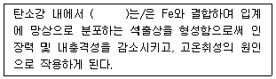
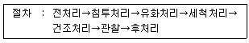
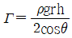
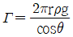
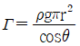
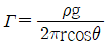
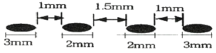

침투비파괴검사기사 (2020-06-06 기출문제)
1과목: 비파괴검사 개론
1. 결함의 유해성에 관한 설명 중 옳은 것은?
- 결함을 가지고 있는 구조물의 강도가 저하하는 양상은 그 결함의 형상과 방향에 따라 다르다.
- 곡면이 있는 결함은 주로 단면적의 감소에 기인하여 강도를 증가시킨다.
- 가늘고 긴 결함은 단면적의 감소 이외에 결함부의 지시 길이에 기인하여 강도를 증가시킨다.
- 표면결함과 내부결함에서 동일종류, 동일치수의 결함이면 내부결함의 경우가 표면결함보다 유해하다.
(정답률: 68%)

2. 셀레늄(Selenium) 등의 반도체 뒤에 금속판을 대고 균일한 전하를 준 후 시험체를 투과한 방사선에 노출되면 방사선의 강도에 따라 반도체의 저항이 작아지고 전하가 이동하여 방전하게 되는데, 여기에 반대 전하를 도포하면 육안으로 확인 가능한 영상이 형성되며 이에 적절한 수지를 도포함으로써 영상을 형성할 수 있다. 이 원리를 이용하는 방법은?
- 건식 방사선 투과검사법(Xeroradiography)
- 전자 방사선 투과검사법(Electron radiography)
- 자동 방사선 투과검사법(Autoradiography)
- 순간 방사선 투과검사법(Flash radiography)
(정답률: 54%)
3. 동일 조건에서 모세관의 반지름이 2배로 늘어나면 모세관속 액체의 높이는 어떻게 되는가?
- 1/4로 낮아진다.
- 1/2로 낮아진다.
- 2배로 높아진다.
- 4배로 높아진다.
(정답률: 76%)
4. 비파괴시험 기술자의 임무라 볼 수 없는 것은?
- 시험결과의 정확한 판정
- 제조공정의 철저한 관리
- 제품의 품질보증에 대한 책임
- 시험기술 향상을 위해 꾸준한 노력
(정답률: 68%)
5. 다음 중 발(기)포누설검사법(Bubble Test)에서 소크시간(soak time)에 해당되는 것은?
- 검사용액을 혼합하고 적용하는데 소요되는 시간
- 검사용액을 적용한 후 관찰할 때까지 소요되는 시간
- 가압의 완료 시점과 용액의 적용시점 사이의 시간
- 시험에 소요되는 총 시간
(정답률: 61%)
6. 다음 ()안에 들어갈 원소는?

- Cu
- S
- Mn
- Si
(정답률: 63%)
7. 다음 중 주석에 대한 설명으로 틀린 것은?
- 화학기호는 Sn이다.
- 상온가공경화가 없으므로 소성가공이 쉽다.
- 비중은 약 10.3이고, 융점은 약 670℃정도이다.
- 무독성이므로 의약품, 식품 등의 포장용, 튜브에 사용된다.
(정답률: 56%)
8. 실루민을 개량처리하는 이유로 옳은 것은?
- 공정점 부근의 주조조직으로 나타나는 Si 결정을 미세화 시키기 위해
- 공석점 부근의 주조조직으로 나타나는 Ai 결정을 미세화 시키기 위해
- 공정점 부근의 주조조직으로 나타나는 Zni 결정을 미세화 시키기 위해
- 공석점 부근의 주조조직으로 나타나는 Sn 결정을 미세화 시키기 위해
(정답률: 69%)
9. 재료의 정적 파괴응력보다 작은 응력을 장시간 동안 반복적으로 받는 경우에 파괴되는 현상은?
- 마모
- 피로
- 크리프
- 샤르피
(정답률: 78%)
10. 금속의 인장시험 시 측정되는 다음 항목들 중 가장 높은 응력 값을 나타내는 것은?
- 인장 강도
- 항복 강도
- 탄성 강도
- 피로 강도
(정답률: 62%)
11. 알루미늄 합금의 질별 기호가 잘못 짝지어진 것은?
- O ; 어닐링한 것
- H ; 가공 경화한 것
- W : 용체화 처리한 것
- F : 용체화 처리 후 자연시효한 것
(정답률: 58%)
12. Mg 합금에 대한 설명으로 틀린 것은?
- 소성가공성이 높아 상온변형이 쉽다.
- 비강도가 커서 항공기나 자동차 재료 등으로 사용된다.
- 감쇠능이 커서 소음방지 재료로 우수하다.
- 구상 흑연주철의 첨가제로 사용된다.
(정답률: 60%)
13. SM45C의 탄소 함유량은 약 몇 %인가?
- 0.045
- 0.12
- 0.45
- 1.2
(정답률: 64%)
14. 순철의 냉각에서 A3 변태에 대한 설명으로 옳은 것은?
- 온도는 약 1410℃이다.
- 부피가 감소하는 변화이다.
- 결정구조의 변화를 수반한다.
- 공정 반응이다.
(정답률: 56%)
15. 다음 합금 중 형상기억 효과가 있는 것은?
- Mn-B
- Co-W
- Cr-Co
- Ti-Ni
(정답률: 67%)
16. 용접 작업으로 인하여 발생하는 잔류 응력을 제거하는 방법으로 틀린 것은?
- 솔더링
- 피닝법
- 국부 풀림법
- 저온 응력 완화법
(정답률: 48%)
17. 다음 중 노치취성 시험방법이 아닌 것은?
- 슈나트 시험
- 코머렐 시험
- 샤르피 시험
- 카안인열 시험
(정답률: 40%)
18. 저수소계 피복 아크 용접봉의 건조온도 및 건조시간으로 다음 중 가장 적합한 것은?
- 100~150℃, 30분
- 200~300℃, 1시간
- 150~200℃, 2시간
- 300~350℃, 1~2시간
(정답률: 50%)
19. 가스 금속 아크 용접에서 용융 금속의 이동 형태가 아닌 것은?
- 단락 이행
- 입상 이행
- 롤러 이행
- 스프레이 이행
(정답률: 50%)
20. 아크 용접기의 1차측 입력이 20kVA인 경우 가장 적합한 퓨즈의 용량은? (단, 이 용접기의 전원전압은 200V이다.)
- 10A
- 50A
- 100A
- 200A
(정답률: 62%)
2과목: 침투탐상검사 원리
21. 형광침투탐상검사에 사용되는 침투액의 점성계수와 침투속도의 관계에서 점성계수가 높을수록 침투속도는?
- 느려진다.
- 무관하다.
- 빨라진다.
- 비례한다.
(정답률: 75%)
22. 형광침투탐상시험의 지시모양 관찰에 대한 설명이 틀린 것은?
- 현상제 적용 후 7~60분 사이에 하는 것이 바람직하다.
- 형광침투액 사용 시 자외선등이 필요하며, 관찰하기 전에 일정시간 이상 어두운 곳에서 적응한다.
- 염색침투액 사용 시 시험면의 조도가 최대 100lux 이하의 자연광 또는 백색광이 필요하다.
- 지시 모양이 불명확할 때에는 재시험 또는 다른 방법으로 조사한다.
(정답률: 70%)
23. 특수 목적에 사용되는 입자여과법에 관한 설명 중 틀린 것은?
- 다공성 재질의 시험체를 검사하는 방법이다.
- 형광 유색 액체에 입자를 현탁시켜 적용한다.
- 불연속부에 보다 많은 입자가 축적되는 현상을 관찰한다.
- 검사 감도는 낮아 미세한 결함 검출에는 적합하지 않다.
(정답률: 41%)
24. 사용 중인 기름베이스 유화제의 피로시험에 대한 점검실시 방법과 가장 거리가 먼 것은?
- 점성 시험
- 수세성 시험
- 수분함량 시험
- 형광휘도 시험
(정답률: 49%)
25. 침투액을 표면 불연속의 미세한 틈 속으로 침투시킬 때 침투에 영향을 미치는 중요한 요인에 해당되지 않는 것은?
- 시험체의 표면 청결도
- 침투액의 적심성
- 시험체의 재질
- 침투액의 접촉각
(정답률: 56%)
26. 침투탐상시험에 사용하는 현상제 중 검출감도가 가장 높은 것은?
- 건식 현상제
- 속건식 현상제
- 수현탁성 습식 현상제
- 수용성 습식 현상제
(정답률: 49%)
27. 유화제를 이용한 침투탐상시험에서 기름입자는 입자표면에 흡착된 유화제의 분자막에 의해 물속에 격리되어 기름입자끼리 응집할 수 없는 유탁액이 된다. 유탁액 상태에서 침투액의 유성입자를 분리 제거하기 위한 방법으로 올바른 것은?
- 다시 물을 첨가한다.
- 다시 기름을 첨가한다.
- 다시 계면활성제를 첨가한다.
- 다시 유화제를 첨가한다.
(정답률: 53%)
28. 지시모양의 형성 조건과 거리가 먼 것은?
- 절차에 따라 수행하므로 기량과 자격을 갖출 필요는 없다.
- 탐상제가 좋아야 한다.
- 선택한 시험법이 적합해야 한다.
- 시험 조건이 적합해야 한다.
(정답률: 75%)
29. 탐상제의 피로 원인이 아닌 것은?
- 유지류의 혼입
- 탐상제 속의 용제 증발
- 산 또는 알칼리의 혼입
- 탐상제의 유량
(정답률: 55%)
30. 침투탐상시험에 사용하는 이상적인 침투제의 조건으로 틀린 것은?
- 매우 미세한 개구부에도 쉽게 침투되어야 한다.
- 증발이나 건조가 너무 빠르지 말아야 한다.
- 얕거나 벌어져 있는 개구부에서도 쉽게 세척되어야 한다.
- 얇은 도포막을 형성하여야 한다.
(정답률: 70%)
31. 침투탐상검사 공정 중 대형구조물 부분검사에 가장 적합한 시험방법(용제제거성 염색침투탐상시험)의 절차로 옳은 것은?
- 전처리→침투처리→유화처리→제거처리→현상처리→건조처리→관찰→후처리
- 전처리→침투처리→제거처리→현상처리→관찰→후처리
- 전저리→침투처리→제거처리→유화처리→현상처리→관찰→후처리
- 전처리→침투처리→제거처리→건조처리→관찰→후처리
(정답률: 61%)
32. 침투탐상검사에서 침투력에는 영향이 없으나 침투액의 유동속도, 즉 침투액이 결함 속으로 침투하는 침투속도에 영향을 미치는 것은?
- 표면장력
- 적심성
- 모세관현상
- 점성
(정답률: 59%)
33. 침투탐상검사에서 침투액과 용제(solvent)에 함유된 유황의 함량은 제한한다. 다음 중 특히 사용상 제한을 받는 재질은?
- 알루미늄 합금
- 니켈 합금
- 마그네슘 합금
- 동 합금
(정답률: 51%)
34. 아래 처리에 따라 시험하는 침투탐상 시험방법은?

- 후유화성 형광침투액(기름베이스 유화제)-습식현상법
- 후유화성 이원성 형광침투액(기름베이스유화제)-습식 현상법
- 후유화성 형광침투액(기름베이스 유화제)-속건식 현상법
- 후유화성 이원성 형광침투액(기름베이스 유화제)-무현상법
(정답률: 51%)
35. 탐상제의 점검 중 기준 탐상제란 어떤 것인가?
- 구입 시에 소량을 청결한 용기에 담아 보관하는 탐상제
- 표준 교정기관 등에서 인정하는 탐상제
- 냉동하여 보관하는 탐상제
- 직전에 사용하여 성능에 이상이 없었던 탐상제
(정답률: 55%)
36. 다음 침투탐상시험 중에 물세척이 필요하지 않은 것은?
- 수세성 형광침투탐상시험
- 후유화성 형광침투탐상시험
- 후유화성 염색형광침투탐상시험
- 용제제거성 형광형광침투탐상시험
(정답률: 67%)
37. 침투탐상검사에 적용되는 현상제 중 벤토나이트, 활성 백토 등에 습윤제, 계면활성제, 소포제 등을 첨가하여 사용하는 현상제는?(오류 신고가 접수된 문제입니다. 반드시 정답과 해설을 확인하시기 바랍니다.)
- 건식 현상제
- 무현상
- 습식 현상제
- 속건식 현상제
(정답률: 33%)
38. 액면과 관의 접촉각을 θ, 표면장력을 Γ라 할 때, 표면장력을 구하는 식으로 옳은 것은? (단, ρ:액체의 밀도, r:관의 반지름, h:액 기둥의 높이, g:중력가속도이다.)




(정답률: 44%)
39. 압연할 때 기계의 조정 불량이 주된 원인으로 강괴의 각이 겹쳐지거나 표면에 무리한 힘이 가해짐에 따라 표면에 흠이 발생한 후 강재의 표면에 눌려 발생하는 결함은?
- 겹침(lap)
- 심(seam)
- 탕계(cold shut)
- 수축 균열(shrinkage crack)
(정답률: 69%)
40. 후유화성 침투탐상검사에서 가장 중요하게 다루어야 할 작업시간은?
- 전처리시간
- 현상시간
- 유화시간
- 건조시간
(정답률: 68%)
3과목: 침투탐상검사 시험
41. 침투탐상검사에 사용되는 침투액이 갖추어야 할 특성이 아닌 것은?
- 점성이 낮아야 한다.
- 인화점이 낮아야 한다.
- 적심성이 좋아야 한다.
- 표면장력이 낮아야 한다.
(정답률: 65%)
42. 후유화성 침투액을 사용할 때 물베이스 유화제를 적용하는 경우 예비세척처리 과정을 거치는 가장 큰 이유는?
- 침투시간을 줄이기 위하여
- 결함검출 감도를 높이기 위하여
- 건조처리 과정을 생략하기 위하여
- 배액과 유화조 내의 오염을 최소화하기 위하여
(정답률: 49%)
43. 침투탐상검사에 사용되는 탐상제 중 화재예방에 대한 관리가 필요 없는 것은?
- 건식현상제
- 속건식현상제
- 용제형세척제
- 용제제거성 침투제
(정답률: 58%)
44. 대비시험편을 사용하여 탐상조작의 적합여부를 점검하기 위한 방법의 설명으로 옳은 것은?
- 한쌍의 개비시험편에 각각 다른 탐상제를, 다른 조건으로 적용하여 얻어진 지시모양을 비교한다.
- 한쌍의 대비시험편에 동일한 탐상제를 , 다른 조건으로 적용하여 얻어진 지시모양을 비교한다.
- 한쌍의 대비시험편에 동일한 탐상제를, 동일한 조건으로 적용하여 얻어진 지시모양을 비교한다.
- 한쌍의 대비시험편에 각각 다른 탐상제를, 동일한 조건으로 적용하여 얻어진 지시모양을 비교한다.
(정답률: 46%)
45. 석유저장탱크 내의 용접부에 대한 형광침투탐상검사를 수행할 때, 주위배경과 자외선 강도 요건이 옳은 것은?
- 주위 배경: 10lx 이하, 자외선 강도 600μW/cm2 이상
- 주위 배경: 20lx 이하, 자외선 강도 600μW/cm2 이상
- 주위 배경: 10lx 이하, 자외선 강도 800μW/cm2 이상
- 주위 배경: 20lx 이하, 자외선 강도 800μW/cm2 이상
(정답률: 62%)
46. 표면거칠기가 거칠은 경우 가장 적용하기 곤란한 침투탐상검사 방법은?
- 수세성 형광침투탐상검사
- 수세성 염색침투탐상검사
- 후유화성 형광침투탐상검사
- 용제제거성 염색침투탐상검사
(정답률: 38%)
47. 플랜트설비 저장탱크 밑판 용접부를 검사하는데 가장 효과적인 침투탐상방법은?
- FA-S
- FB-N
- FC-S
- FD-N
(정답률: 53%)
48. 염색법 및 형광법에 사용하는 현상제의 요건으로 옳은 것은?
- 염색법:백색도가 낮은 미분말, 형광법:두명도가 낮은 백색미분말
- 염색법:백색도가 낮은 미분말, 형광법:투명도가 높은 백색미분말
- 염색법:백색도가 높은 미분말, 형광법:투명도가 낮은 백색미분말
- 염색법:백색도가 높은 미분말, 형광법:투명도가 높은 백색미분말
(정답률: 49%)
49. 전기시설이 없는 밝은 곳에서 소형 대량 생산된 주물 표면 검사에 가장 적합한 검사 방법은?
- 수세성 염색침투탐상검사
- 후유화성 형광색침투탐상검사
- 용제제거성 염색침투탐상검사
- 용제제거성 형광침투탐상검사
(정답률: 55%)
50. 침투탐상검사에 사용되는 침투제에 필요한 성능이 아닌 것은?
- 염료나 형광도료가 분산매질 속에 잘 분산되어 있어야 한다.
- 침투액이 탐상면을 균일하고 충분하게 적셔야 한다.
- 침투액이 탐상면에 있는 미세한 결함속으로 침투해 들어갈 수 있어야 한다.
- 후유화성 침투액은 물 세척처리에 의해 잘 제거되도록 유화제 성분이 잘 분산되어 있어야 한다.
(정답률: 52%)
51. 형광침투탐상검사에 사용되는 자외선등은 어느정도의 파장을 가진 자외선이 가장 많이 방사되도록 설계되어 있는가?
- 265±10nm
- 365±10nm
- 465±10nm
- 565±10nm
(정답률: 57%)
52. 침투탐상검사에서 주조물 표면상에 나타나는 콜드셧에 의한 결함모양 표시는?
- 굵은 점선
- 작은 결함이 포도송이처럼 모인 구멍
- 불연속의 폭이 좁고 깊이는 얕은 선형지시
- 굵고 예리한 그물 형태
(정답률: 52%)
53. 다음 중 현상처리에 관한 설명으로 틀린 것은?
- 미세분말 입자 사이에 생긴 공간에 의한 모세관현상을 이용하여 표면으로 흡출(bleed out)되게 한다.
- 실제 결함의 크기보다 확대된 지시모양을 만들어 관찰을 쉽게 한다.
- 지시모양에 대한 대비(contrast)를 높이는 역할을 한다.
- 제거처리 후에 남아있는 침투액을 세척하는 역할을 하여 결함만을 더욱 선명하게 나타내게 한다.
(정답률: 49%)
54. 산성잔류물 및 크롬성분을 수세성 형광침투탐상법에서 타 검사법보다 매우 유해하다. 그 이유는?
- 모든 방법에 있어서 형광성분은 동일한 영향을 미치기 때문에
- 물이 있는 곳에서 산성 및 산화물이 형광과 반응을 하기 때문에
- 수세성 침투제에 포함되어 있는 유화제가 있는 곳에서만 산성 및 산화물이 형광과 반응을 하기 때문에
- 유화제가 산성잔유물 및 크롬성분에 의한 영향을 중화시켜 주기 때문에
(정답률: 48%)
55. 물로 세척처리를 하는 경우, 현상처리를 효과적으로 하기 위한 건조처리의 적용시기를 설명한 것으로 옳은 것은?
- 습식 현상법에서는 세척처리 후에 한다.
- 건식 현상법에서는 현상처리 후에 한다.
- 무현상법에서는 건조처리를 하지 않는다.
- 속건식 현상법에서는 세척처리 후에 한다.
(정답률: 38%)
56. 침투탐상검사에서 지시모양의 평가에 대한 사항으로 틀린 것은?
- 평가는 자격이 인정된 경험있는 검사원이 실시한다.
- 지시모양은 먼저 의사지시인지 결함지시인지 확인해야 한다.
- 결함지시의 경우 지시모양을 분류하고, 크기 및 위치를 측정한다.
- 의사지시의 경우 지시모양을 분류하지 않고, 그 원인을 보고서에 기록한다.
(정답률: 70%)
57. 침투탐상검사에서 나타난 지시모양에 대한 설명 줄 틀린 것은?
- 단면 급변부에는 지시가 발행하지 않는다.
- 용접부 덧살 모양에 의한 지시모양은 의사지시이다.
- 불연속부가 표면에 노출되지 않으면 지시모양은 없다.
- 연속부로부터 노출된 침투지시는 실제 크기보다 클 수도 있다.
(정답률: 43%)
58. 다음 중 적심현상의 종류가 아닌 것은?
- 확장 적심
- 침적 적심
- 응집 적심
- 부착 적심
(정답률: 37%)
59. 침투탐상검사 시 외부로부터의 오염에 기인한 의사지시가 아닌 것은?
- 검사대 위에 떨어져 있는 침투액
- 검사원의 손에 묻어 있는 침투액
- 어떤 제품의 지시에 있는 침투액이 다른 제품 표면의 깨끗한 부위에 묻은 경우
- 현상제가 두껍게 도포되어 제거되지 않은 침투액을 덮어버리는 경우
(정답률: 59%)
60. 다음 중 유화시간을 달리 할 수 있는 인자와 거리가 먼 것은?
- 시험체의 크기
- 예상되는 결함의 종류
- 유화제 및 침투액의 종류
- 온도 및 시험표면의 거칠기
(정답률: 57%)
4과목: 침투탐상검사 규격
61. 압력용기-비파괴 시험 일반(KS B 6752)에서 용제 제거성 침투제의 알루미늄 주조품 및 용접부의 침투유지시간을 얼마인가?
- 5분
- 6분
- 7분
- 8분
(정답률: 54%)
62. 압력용기-비파괴 시험 일반(KS B 6752)에서 침투탐상검사의 불합격 지시의 기록사항이 아닌 것은?
- 지시의 위치
- 지시의 범위
- 지시의 갯수
- 지시의 종류
(정답률: 29%)
63. 침투탐상 시험방법 및 침투지시모양의 분류(KS B 0816)에 따른 시험 기록에서 조작조건으로 규정되지 않은 것은?
- 세적시간 및 온도
- 건조 온도 및 시간
- 현상시간 및 관찰시간
- 세척수의온도와 수압
(정답률: 48%)
64. 침투탐상 시험방법 및 침투지시모양의 분류(KS B 0816)에서 여러 개의 지시 모양이 거의 동일 직선상에 존재하고, 지시 상호 간의 거리가 2mm 이하인 침투지시모양의 지시 길이는 어떻게 산정하는가?
- 침투지시모양 각각의 길이를 더한 값만을 지시길이로 한다.
- 침투지시모양 각각의 길이를 더하고 지시사이의 거리의 합을 뺀 값을 지시길이로 한다.
- 침투지시 모양 각각의 길이를 더하고 지시 사이의 거리의 합으로 나눈 값을 지시길이로 한다.
- 침투지시모양 각각의 길이와 지시 사이의 거리를 모두 더한 값을 지시길이로 한다.
(정답률: 71%)
65. 침투탐상 시험방법 및 침투지시모양의 분류(KS B 0816)에 의한 시험의 조작에서 기름 베이스 유화제를 사용하는 시험인 경우 염색 침투액을 사용할 때의 유화 시간으로 적당한 것은?
- 30초 이내
- 1분 이내
- 2분 이내
- 3분 이내
(정답률: 53%)
66. 다음 지시를 압력용기 제작기준 규격 강제부록(ASME Sec.Ⅷ)에 따른 판정으로 옳은 것은? (단, 결함지시모양은 모두 원형 지시이다.)

- 각각의 독립결함으로 간주되며 합격
- 하나의 결함으로 간주되며 합격
- 불합격
- 합격, 불압격을 판정할 수 없다.
(정답률: 52%)
67. 보일러 및 압력용기에 대한 침투탐상검사(ASME Sec.V Art.6)에 따른 침투탐상시험에서 문서화를 위한 필수 시험기록에 포함되지 않는 것은?
- 절차서 번호
- 침투탐상제의 종류
- 발주자명
- 시험자명
(정답률: 68%)
68. 침투탐상 시험방법 및 침투지시모양의 분류(KS B 0816)에서 규정한 유화처리 중 틀린 것은?
- 유화제는 침지, 붓기 등에 따라 적용한다.
- 유화제는 균일한 유화처리를 한다.
- 물베이스 유화제를 사용할 때는 유화처리에 앞서 물스프레이로 배액을 목적으로 한 예비세척을 한다.
- 세척을 할 때 수온은 10~40℃로 하고 수압은 285kPa이하로 한다.
(정답률: 63%)
69. 보일러 및 압력용기에 대한 침투탐상검사(ASME Sec.V Art.6)에 따른 시험체의 표면온도 범위는 얼마인가?
- 5℃~52℃
- 10℃~54℃
- 12℃~56℃
- 14℃~57℃
(정답률: 54%)
70. 보일러 및 압력용기에 대한 침투탐상검사(ASME Sec.V Art.6)에서 침투탐상검사보고서를 작성할 때 기록하지 않아도 되는 것은?
- 검사일자
- 조명장치
- 절차서 실증일자
- 절차서 번호
(정답률: 47%)
71. 보일러 및 압력용기에 대한 침투탐상검사(ASME Sec.V Art.6)에서 수성현상제를 적용하여 시험체를 건조할 경우 틀린 것은?
- 건조 시간은 따뜻한 공기를 이용하여 단축시킬 수 있다.
- 따뜻한 공기를 사용하여 건조 시 시험체 표면 온도는 52℃를 초과하지 않아야 한다.
- 빨아내기에 의한 건조는 허용하지 않는다.
- 빨아내기에 의한 건조도 가능하다.
(정답률: 49%)
72. 침투탐상 시험방법 및 침투지시모양의 분류(KS B 0816)에서 배액의 용어를 설명한 것으로 옳은 것은?
- 물을 첨가하지않고 사용하는 유화제
- 유화제를 시험체의 표면에 적용하는 조작
- 시험체의 표면에 붙어있는 침투액 및 유화제를 물로 세척하는 조작
- 시험체 표면의 일부분에 액이 남아있지 않게 하기 위하여 액체를 흘러내리게 하는 조작
(정답률: 62%)
73. 침투탐상 시험방법 및 침투지시모양의 분류(KS B 0816)에서 규정하는 속건식 현상제의 적용방법이 아닌 것은?
- 분무
- 붓기
- 붓칠
- 침지(담그기)
(정답률: 47%)
74. 침투탐상 시험방법 및 침투지시모양의 분류(KS B 0816)에서 재시험에 대한 설명한 것으로 옳은 것은?
- 염색 침투액 적용 시 15~50℃로 적용할 때
- 형광 침투액 세척처리 시 수온 10~40℃로 적용할 때
- 현상시간을 7분 적용할 때
- 조작 방법에 잘못이 있었을 때
(정답률: 60%)
75. 침투탐상 시험방법 및 침투지시모양의 분류(KS B 0816)에서 시험방법의 선정 시 고려할 항목이 아닌 것은?
- 표면 거칠기
- 탐상제의 성질
- 결함의 종류
- 시험체의 재질
(정답률: 38%)
76. 침투탐상 시험방법 및 침투지시모양의 분류(KS B 0816)에 따른 독립결함에 해당되지 않는 것은?
- 갈라짐
- 선상 결함
- 원형상 결함
- 분산 결함
(정답률: 67%)
77. 침투탐상 시험방법 및 침투지시모양의 분류(KS B 0816)에서 기호 VB-S는 무엇을 뜻하는가?
- 후유화성 염색 침투액을 사용하고 속건식 현상제를 사용하는 것을 뜻한다.
- 후유화성 형광 침투액을 사용하고 속건식 현상제를 사용하는 것을 뜻한다.
- 후유화성 형광 침투액을 사용하고 습식 현상제를 사용하는 것을 뜻한다.
- 후유화성 염색 침투액을 사용하고 습식 현상제를 사용하는 것을 뜻한다.
(정답률: 47%)
78. 보일러 및 압력용기에 대한 침투탐상검사(ASME Sec.V Art.6)에서 절차서 인정이 요구되는 경우에 실증에 의한 절차서 재인정이 필요한 경우는?
- 현상제 적용시간의 증가
- 검사 후처리 기법의 변경
- 검사원 자격인정 요건의 변경
- 검사체의 형태 또는 크기의 변경
(정답률: 33%)
79. 침투탐상 시험방법 및 침투지시모양의 분류(KS B 0816)에서 강용접부의 융합불량을 검출하고자 상온 25℃에서 시험할 때 필요한 표준 침투시간은?
- 5분
- 7분
- 8분
- 10분
(정답률: 58%)
80. 침투탐상 시험방법 및 침투지시모양의 분류(KS B 0816)의 B형 대비시험편에 대한 내용으로 틀린 것은?
- 시험편은 도금의 두께에 따라 4종류로 나눈다.
- 시험편의 재료는 A2024P로 한다.
- 탐상제의 성능 및 조작방법의 적합여부를 조사하는데 사용한다.
- 도금은 시험편 재료에 니켈도금을 한 후 다시 크롬 도금을 한다.
(정답률: 48%)